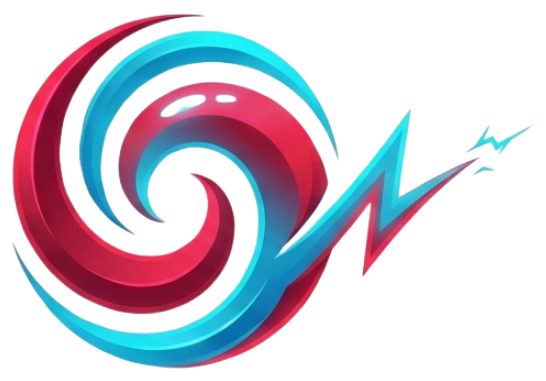

🈯 Terminologia Médica em Kanji e Guia Bilíngue da Interface

生体医学用語 // Terminologia Médica & Biofísica
Auditoria Filológica, Origem Clínica e Correspondência Exata entre Kanji e Português no KokoroSim
🧭 1. Contexto Cultural e Princípios do Bilinguismo
A interface do KokoroSim adota uma identidade visual inspirada nos consoles de telemetria e instrumentação analógica de laboratórios japoneses da década de 1980 e 1990 (notadamente a estética clássica de eletrocardiógrafos de hospitais universitários, monitores médicos da Nihon Kohden e a cibernética de obras consagradas como Akira, de Katsuhiro Otomo).
Longe de utilizar tipografia decorativa vazia ou traduções literais geradas por inteligência artificial, todas as inscrições em caracteres japoneses (Kanji e Katakana) presentes no cockpit correspondem rigorosamente ao vocabulário médico, fisiológico e biofísico padrão utilizado no Japão.
Ao lado de cada termo em japonês, o simulador apresenta a tradução ou sigla direta em Português Brasileiro, garantindo clareza operacional imediata e acessibilidade cognitiva sem prejuízo à experiência imersiva.
📊 2. Tabela Geral de Correspondência e Auditoria Filológica
A tabela a seguir discrimina cada termo presente no simulador, sua transcrição fonética (Hepburn Rōmaji), a morfologia caractere por caractere e a correlação médica com o texto em português.
| Localização na Interface | Texto em Japonês | Transcrição (Rōmaji) | Decomposição Morfológica | Significado Médico no Japão | Texto no Simulador (PT) | Grau de Correspondência |
|---|---|---|---|---|---|---|
| Identidade / Marca | 心 | kokoro / shin | 心 (coração, mente, centro vital) |
Coração / Centro intrínseco | kokor心sim |
Identidade Exata |
| HUD Superior | 心拍数 | shinpakusū | 心 (coração) + 拍 (batimento/pulso) + 数 (contagem/número) |
Frequência Cardíaca (BPM) | FC: |
Exata |
| HUD Superior | PR間隔 | PR kankaku | PR + 間 (espaço) + 隔 (intervalo) |
Intervalo PR (condução atrioventricular) | PR: |
Exata |
| HUD Superior | QRS幅 | QRS haba | QRS + 幅 (largura/amplitude horizontal) |
Duração ou largura do complexo QRS | QRS: |
Exata |
| HUD Superior | QT間隔 | QT kankaku | QT + 間 (espaço) + 隔 (intervalo) |
Intervalo QT (sístole elétrica ventricular) | QT: |
Exata |
| HUD Superior | 静止電位 | seishi den'i | 静止 (repouso/quietude) + 電位 (potencial elétrico) |
Potencial de Repouso de Membrana ($V_{rest}$) | V.Rep: |
Exata |
| Sanfona 0 | 画面表示 | gamen hyōji | 画面 (tela/display) + 表示 (exibição/apresentação) |
Exibição da Tela / Visualização | 0. Visualização |
Exata |
| Sanfona 1 | 電解質 | denkaishitsu | 電解 (eletrólise) + 質 (matéria/substância) |
Eletrólitos / Substâncias Eletrolíticas | 1. Íons e Eletrólitos |
Praticamente Exata (agrega "Íons") |
| Sanfona 2 | 自律神経 | jiritsu shinkei | 自律 (autônomo) + 神経 (nervo/sistema nervoso) |
Sistema Nervoso Autônomo | 2. Sistema Nervoso Autônomo |
Exata |
| Sanfona 3 | 抗不整脈薬 | kō-fuseimyaku-yaku | 抗 (anti) + 不整脈 (arritmia) + 薬 (fármaco/remédio) |
Medicamentos Antiarrítmicos | 3. Fármacos Antiarrítmicos |
Exata e Rigorosa |
| Sanfona 4 | 病態生理 | byōtai seiri | 病態 (estado patológico) + 生理 (fisiologia) |
Fisiopatologia (Pathophysiology) | 4. Condições Patológicas |
Equivalência Funcional |
| Sanfona 5 | 生体音響 | seitai onkyō | 生体 (organismo vivo) + 音響 (acústica/som) |
Bioacústica / Sons Biológicos | 5. Monitorização & Áudio |
Equivalência Contextual |
| Canal CH-01 | 活動電位 | katsudō den'i | 活動 (atividade/ação) + 電位 (potencial elétrico) |
Potencial de Ação Celular | POTENCIAIS DE AÇÃO CELULAR |
Exata |
| Canal CH-02 | 心電図 | shindenzu | 心 (coração) + 電 (eletricidade) + 図 (diagrama/traçado) |
Eletrocardiograma (ECG) | ECG DERIVAÇÃO II |
Exata |
| Canal CH-03 | カルシウム動態 | karushiumu dōtai | カルシウム (Cálcio) + 動態 (dinâmica/cinética) |
Dinâmica / Cinética de Cálcio | TRANSIENTE DE CÁLCIO (Ca²⁺) |
Praticamente Exata |
| Canal CH-04 | 左室圧迫曲線 | sashitsu appaku kyokusen | 左室 (Ventrículo Esquerdo) + 圧迫 (pressão) + 曲線 (curva) |
Curva de Pressão do Ventrículo Esquerdo | HEMODINÂMICA: LVP & AoP |
Equivalência Fisiológica |
🔬 3. Detalhamento Técnico e Origem Clínica por Módulo
3.1. A Marca: kokor心sim
- Kanji:
心 - Leituras: Kun'yomi: こころ (kokoro) // On'yomi: しん (shin)
- Significado Médico e Filosófico: Na tradição clássica,
心abrange tanto o coração físico anatômico (shinzō - 心臓) quanto a sede das funções vitais, ritmo e sentimentos. No logotipo do KokoroSim, o kanji substitui a terminação fonética"o"de"kokoro", unificando a raiz japonesa ao sufixo ocidental"sim"(simulador).
3.2. Telemetria do HUD Superior (Monitores de UTI)
Os parâmetros eletrofisiológicos exibidos no cabeçalho superior sintetizam em tempo real o eletrocardiograma e a estabilidade celular:
心拍数 // FC:(Frequência Cardíaca)- Composto por
心(coração),拍(pulso, batida) e数(contagem numérica). É o termo universal no Japão para medir os batimentos por minuto (Heart Rate), exibido ao lado da sigla consagrada em português FC (Frequência Cardíaca). PR間隔 // PR:(Intervalo PR)- A palavra
間隔(kankaku) significa tecnicamente "intervalo temporal" ou "espaçamento". Mede a velocidade de condução do impulso elétrico desde o Nó Sinoatrial até as fibras de Purkinje, passando pelo atraso protetor do Nó AV. QRS幅 // QRS:(Largura do Complexo QRS)幅(haba) significa "largura" ou "amplitude transversal". Em eletrocardiografia, refere-se ao tempo de ativação e despolarização ventricular rápida em milissegundos ($ms$). Um QRS largo alerta para atrasos de condução intraventricular ou bloqueios de ramo.QT間隔 // QT:(Intervalo QT)- Representa a sístole elétrica ventricular completa (despolarização + repolarização). A alteração desse intervalo reflete diretamente a dinâmica de cálcio e potássio.
静止電位 // V.Rep:(Potencial de Repouso)- Formado por
静止(seishi, repouso estático ou quiescência) e電位(den'i, potencial elétrico / voltagem). Expressa o potencial transmembrana celular na Fase 4 (em torno de $-84\text{ mV}$ nos miócitos ventriculares), indicado abreviadamente como V.Rep em português.
3.3. Painel Lateral de Controle (Sanfonas / Accordions)
Cada módulo do rack expansível agrupa variáveis sob rigorosa taxonomia biomédica:
0. 画面表示 // Visualização
- Morfologia:
画(quadro/imagem) +面(superfície/tela) +表(superfície externa) +示(indicar/mostrar). - Fundamento: Termo padrão de eletrônica e engenharia de software no Japão para telas e opções de exibição gráfica. Controla os modos de varredura do osciloscópio (rolling, sweep, triggered) e as camadas celulares ativas.
1. 電解質 // Íons e Eletrólitos
- Morfologia:
電(eletricidade) +解(dissolver/quebrar) +質(essência/substância). - Fundamento: Termo técnico para eletrólitos dissolvidos no meio aquoso extracelular. O texto em português complementa com "Íons e Eletrólitos", permitindo a manipulação das concentrações milimolares de $[K^+]_o$, $[Ca^{2+}]_o$ e $[Na^+]_o$.
2. 自律神経 // Sistema Nervoso Autônomo
- Morfologia:
自(próprio) +律(lei/regra/controle) +神(mente/espírito) +経(trilho/meridiano/nervo). - Fundamento: Representa o ramo eferente involuntário que modula a frequência cardíaca (cronotropismo), a condução nodal (dromotropismo) e o inotropismo ventricular através de receptores $\beta_1$-adrenérgicos (simpático) e $M_2$-muscarínicos (parassimpático/vagal).
3. 抗不整脈薬 // Fármacos Antiarrítmicos
- Morfologia:
抗(antagonista/anti) +不(não) +整(regular/ordenado) +脈(pulso) +薬(medicamento/droga). - Fundamento: Uma das traduções mais precisas e elegantes do japonês médico:
不整脈(fuseimyaku) significa literalmente "pulso irregular" (arritmia), e抗...薬indica classe medicamentosa antagonista. O módulo permite testar bloqueadores de sódio (Lidocaína - Classe I), potássio (Amiodarona - Classe III), cálcio (Verapamil - Classe IV) e inibidores da bomba $Na^+/K^+$ (Digoxina).
4. 病態生理 // Condições Patológicas
- Morfologia:
病(doença) +態(estado/condição) +生(vida) +理(lógica/princípio). - Fundamento: Em japonês,
病態生理é o termo acadêmico exato para Fisiopatologia (Pathophysiology). Em português, foi optado pelo rótulo operacional "Condições Patológicas" para facilitar a compreensão imediata das intervenções disponíveis (nível de isquemia tecidual e porcentagem de fibrose miocárdica).
5. 生体音響 // Monitorização & Áudio
- Morfologia:
生体(organismo vivo/corpo biológico) +音響(acústica/ondas sonoras). - Fundamento: Refere-se à Bioacústica. No simulador, o texto em português contextualiza a finalidade prática: "Monitorização & Áudio", englobando a fonocardiografia das bulhas B1/B2 geradas pelo fechamento valvar mecânico e o tom sonoro dos monitores multiparamétricos de UTI disparados pela detecção da onda R.
3.4. Canais de Osciloscópio (Display CRT Fosfórico)
Os 4 canais de plotagem contínua utilizam a nomenclatura dos instrumentos laboratoriais:
CH-01 [ 活動電位 // POTENCIAIS DE AÇÃO CELULAR ]活動電位(katsudō den'i): Combinação de活動(atividade motora/funcional) e電位(voltagem elétrica). É a designação universal na neurociência e na cardiologia para o Potencial de Ação biológico transmembrana.CH-02 [ 心電図 // ECG DERIVAÇÃO II ]心電図(shindenzu): O traçado elétrico do coração gerado pelo dipolo transmural resultante dos miócitos endocárdicos, mediomurais (células M) e epicárdicos.CH-03 [ カルシウム動態 // TRANSIENTE DE CÁLCIO (Ca²⁺) ]カルシウム(karushiumu, cálcio em alfabeto fonético Katakana) +動態(dōtai, cinética, dinâmica, trânsito). Expressa o influxo citoplasmático e a recaptação sarcoplasmática de íons $Ca^{2+}$, mecanismo central do acoplamento excitação-contração.CH-04 [ 左室圧迫曲線 // HEMODINÂMICA: LVP & AoP ]左室(sashitsu, Ventrículo Esquerdo) +圧迫(appaku, pressão compressiva) +曲線(kyokusen, curva geométrica). Refere-se especificamente à curva de pressão gerada pela contração isovolumétrica e ejeção ventricular esquerda, visualizada em conjunto com a pressão arterial aórtica no diagrama clássico de Wiggers.
💡 4. Garantia de Conformidade e Acessibilidade
- Zero Efeito Ruído: A inclusão dos caracteres asiáticos foi submetida a revisão lexicográfica rigorosa para assegurar que nenhum termo apresente sentido pejorativo, tradução semântica distorcida ou grafia vulgar.
- Dupla Indicação (Bilingual Shield): Em todos os componentes interativos onde a leitura rápida é essencial para o raciocínio médico ou farmacológico, os símbolos em português ou as unidades do Sistema Internacional ($mEq/L$, $mmol/L$, $ms$, $mV$, $BPM$) possuem destaque visual e tipografia de alto contraste.
- Padrão Gráfico Aberto: Este vocabulário serve como referência para professores e alunos interessados na integração entre informática biomédica, design de interfaces de alta densidade informativa e história da instrumentação cirúrgica internacional.